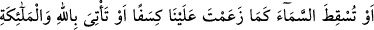
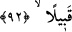
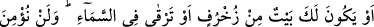
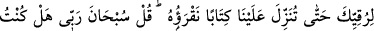
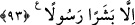

bahçeleri sularken nehirleri akıtmaktır veya devamlı olarak akıtmaktır.
92. “Yahut, iddiâ ettiğin gibi, üzerimize gökten parçalar yağdırmalısın veya
Allah’ı ve melekleri gözümüzün önüne getirmelisin.”
“Yahud, iddiâ ettiğin gibi,” yâni iddiâ ettiğine benzer bir yağdırma ile “üzerimize
gökten parçalar yağdırmalısın” Onlar bu sözleri ile “Dilesek üzerlerine gökten
parçalar düşürürüz.” (Sebe’, 34/9) âyetini kasdediyorlardı.
“Veya Allah’ı ve melekleri” topluluk hâlinde ayan beyan veya söylediklerinin
doğruluğuna şâhidlik edecek kefil olarak “gözümüzün önüne getirmelisin.”
93. “Yahut da altından bir evin olmalı, ya da göğe çıkmalısın. Bize, okuyacağımız
bir kitap indirmediğin sürece (göğe) çıktığına da asla inanmayız.” De ki: Rabbimi
tenzih ederim. Ben, sadece beşer bir elçiyim.
“Yahud da altından bir evin olmalı” Kâşifî şöyle der: “Altından bir evin olmalı,
içinde oturmalı ve fakirlikten kurtulmalısın” “ya da göğe” göğün merdivenlerine
“çıkmalısın. Bize,” gökten, senden almaksızın bizzat “okuyacağımız” seni doğrulayan
“bir kitap indirmediğin sürece” göğe “çıktığına da asla inanmayız.”
Onların bu tür tekliflerde bulunmaktan kasıtları ayak diretme ve inatçılıktan ibâretti.
Eğer maksadları doğruya ulaşmak olsaydı şâhid oldukları mûcizeler onlara yeterdi.
Onların katılıklarına ve tekliflerine bir hayret ifâdesi ve Sübhân’ı tenzih için “De ki:
Rabbimi tenzih ederim.” Benim Rabbim münezzehtir ki kimse O’na tahakküm edemez
ve kudretine ortak olamaz. “Ben, sadece beşer bir elçiyim.” Melek değilim ki benden
göğe yükselme ve benzeri şeyler yapmam düşünülsün. Sadece diğer peygamberler gibi
tercih hakkı olmaksızın Rabbim tarafından risâleti tebliğ ile görevli bir rasûlüm. Diğer
peygamberler de kavimlerine onların durumuna uygun şekilde Allah’ın kendi ellerinde
ızhâr ettiği dışında bir şey getirmiyorlardı. Mûcizeler onların elinde değildi. Allah’ın
izni olmaksızın kendi başlarına herhangi bir mûcize getirmeleri mümkün değildi.
Âyette işâret vardır ki onlar mûcizeleri duyularla hissedilen varlıkların zâhirinde